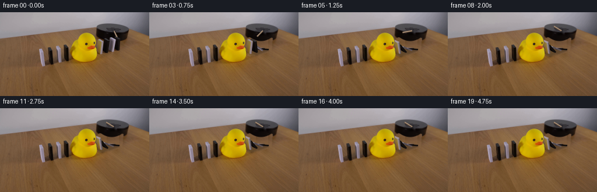
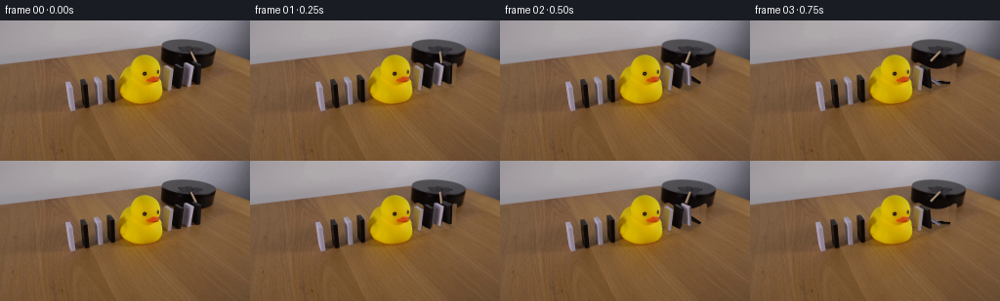
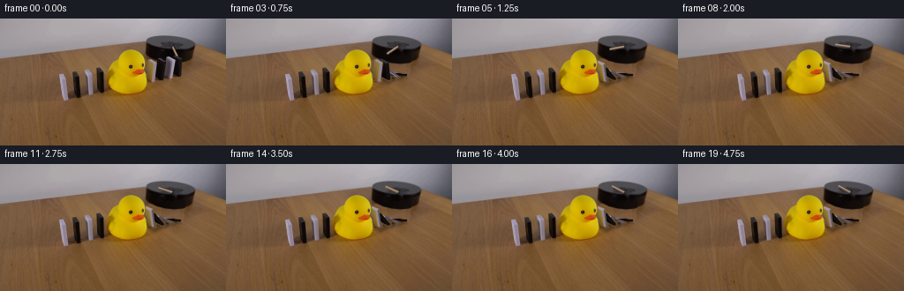
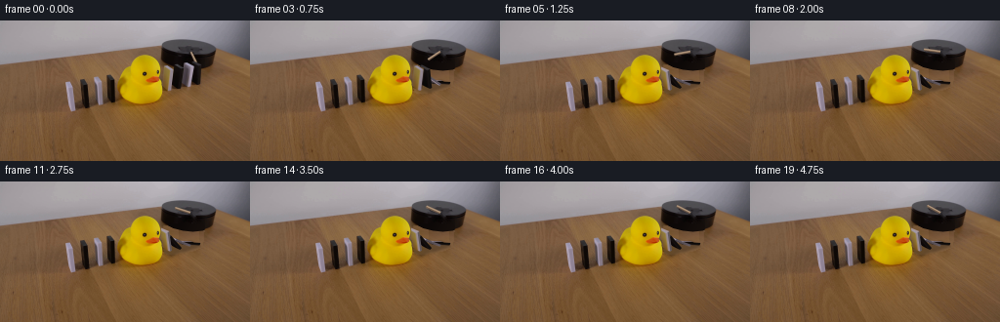
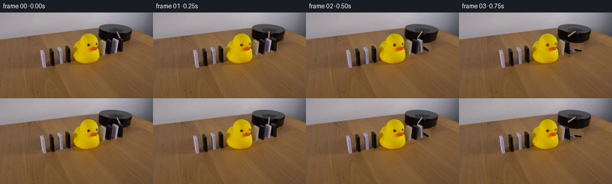

CODING AGENTS AS PIXEL WORLD MODELS
traex/GPT-6.1-Sol · 0055
点击播放 · 原生 RGB 像素
逐轮保存的候选
回放视频、检查图与代码变化。
每份候选均可单独播放。实际图片检查记录在下方工具轨迹中。
候选 01播放与检查图
点击播放 · 原生 RGB 像素


展开代码变化
--- 上一保存版本
+++ 本次保存版本
@@ -0,0 +1,211 @@
+from pathlib import Path
+import math
+import cv2
+import numpy as np
+from PIL import Image
+import artifact_io
+
+ROOT=Path(__file__).resolve().parent
+I=np.array(Image.open(ROOT/'first_frame.png').convert('RGB'))
+H,W=I.shape[:2]
+S=4
+
+def polygon_mask(points, scale=1):
+ out=np.zeros((H*scale,W*scale),np.uint8)
+ cv2.fillPoly(out,[np.round(np.asarray(points)*scale).astype(np.int32)],255)
+ return out
+
+# Four dominoes to the right of the duck, back to front.
+blocks=[
+ dict(q=np.array([196.,61.6]),u=np.array([8.2,3.6]),z=np.array([2.,-20.]),th=np.array([2.1,-.65]), color=(23,18,16),start=.18,angle=70),
+ dict(q=np.array([185.8,63.]),u=np.array([8.4,3.6]),z=np.array([2.3,-20.1]),th=np.array([1.8,-.55]),color=(148,136,149),start=.37,angle=57),
+ dict(q=np.array([175.8,65.7]),u=np.array([8.4,4.]),z=np.array([2.3,-21.]),th=np.array([1.8,-.55]),color=(27,22,20),start=.56,angle=38),
+ dict(q=np.array([165.7,67.8]),u=np.array([8.3,3.6]),z=np.array([2.3,-21.6]),th=np.array([1.7,-.55]),color=(155,142,147),start=.75,angle=14),
+]
+for b in blocks:
+ q,u,z,th=b['q'],b['u'],b['z'],b['th']
+ b['face']=np.float32([q,q+u,q+u+z,q+z])
+ b['top']=np.float32([q+z,q+u+z,q+u+z+th,q+z+th])
+ b['side']=np.float32([q+u,q+u+th,q+u+th+z,q+u+z])
+ p=np.concatenate([b['face'],b['top'],b['side']])
+ b['outline']=cv2.convexHull(p).reshape(-1,2)
+
+# Extract the photographic duck, including the dark eye, using only RGB.
+color=(I[:,:,0].astype(int)>143)&(I[:,:,1].astype(int)>109)&(I[:,:,2].astype(int)<79)
+color[:30]=False;color[89:]=False;color[:,:119]=False;color[:,169:]=False
+n,l,stats,centroids=cv2.connectedComponentsWithStats(color.astype(np.uint8),8)
+duck=(l==(1+np.argmax(stats[1:,cv2.CC_STAT_AREA]))).astype(np.uint8)*255
+contours,_=cv2.findContours(duck,cv2.RETR_EXTERNAL,cv2.CHAIN_APPROX_SIMPLE)
+duck[:]=0;cv2.drawContours(duck,contours,-1,255,cv2.FILLED)
+duck=cv2.dilate(duck,np.ones((3,3),np.uint8),iterations=1)
+# Keep the rubber silhouette, but do not restore the adjacent white domino edge.
+duck[:,168:]=0
+
+# Remove the dominoes locally, leaving the left half of the demonstration untouched.
+remove=polygon_mask([(167,44),(177,42),(187,40),(198,40),(211,44),(209,67),(198,70),(179,74),(170,75),(163,71),(164,63)])
+remove[duck>0]=0
+# Analytic continuation of the wood grain and the front of the black platform.
+plate=I.astype(np.float32).copy()
+rng=np.random.default_rng(51)
+for y in range(40,76):
+ row=I[y,214:235].astype(float)
+ base=np.mean(row,axis=0)
+ for x in range(162,212):
+ if not remove[y,x]:continue
+ # Photographed neighboring grain supplies local high frequency detail.
+ sample=I[y,214+(x-162)%21].astype(float)
+ wood=base+.43*(sample-base)
+ wood += np.array([-2.5,-2.5,-2]) * max(0,(207-x)/45)
+ # A small warm reflected pool next to the duck.
+ warm=math.exp(-((x-169)/12)**2-((y-62)/17)**2)
+ wood+=warm*np.array([10.,7.,-9.])
+ edge=49.1-.019*(x-191.2)**2
+ coverage=np.clip((edge-y)+.5,0,1)
+ dark=np.array([12.,8.,7.])+max(0,x-185)*np.array([.35,.25,.18])
+ dark+=max(0,y-41)*np.array([.22,.15,.09])
+ plate[y,x]=wood*(1-coverage)+dark*coverage
+# Feather only the mask boundary to blend photographed surface texture.
+soft=cv2.GaussianBlur(remove.astype(np.float32)/255,(3,3),.6)
+clean=I.astype(float)*(1-soft[:,:,None])+plate*soft[:,:,None]
+clean=np.uint8(np.clip(clean,0,255))
+
+# Original rod is a narrow tan bar on the circular black motor platform.
+rodmask=polygon_mask([(193.3,30.7),(196.3,30.6),(203,42.4),(200.8,43.3),(197.3,37.7)])
+rodmask=cv2.dilate(rodmask,np.ones((2,2),np.uint8))
+clean=cv2.inpaint(clean,rodmask,3,cv2.INPAINT_TELEA)
+clean_hi=cv2.resize(clean,(W*S,H*S),interpolation=cv2.INTER_CUBIC).astype(np.float32)
+source_hi=cv2.resize(I,(W*S,H*S),interpolation=cv2.INTER_CUBIC).astype(np.float32)
+duck_hi=cv2.resize(duck,(W*S,H*S),interpolation=cv2.INTER_LINEAR).astype(np.float32)/255
+
+# Original photographic textures are mapped to the rotating rigid faces.
+def photo_face(canvas,source,dest,gain=1):
+ source=np.asarray(source,dtype=np.float32)*S
+ dest=np.asarray(dest,dtype=np.float32)*S
+ M=cv2.getPerspectiveTransform(source,dest)
+ tex=cv2.warpPerspective(source_hi,M,(W*S,H*S),flags=cv2.INTER_LINEAR,borderMode=cv2.BORDER_REFLECT_101)
+ m=np.zeros((H*S,W*S),np.uint8)
+ cv2.fillConvexPoly(m,np.round(dest).astype(np.int32),255,lineType=cv2.LINE_AA)
+ a=m.astype(np.float32)[:,:,None]/255
+ canvas[:]=canvas*(1-a)+np.clip(tex*gain,0,255)*a
+
+
+def flat_face(canvas,points,color):
+ p=np.asarray(points)*S
+ m=np.zeros((H*S,W*S),np.uint8)
+ cv2.fillConvexPoly(m,np.round(p).astype(np.int32),255,lineType=cv2.LINE_AA)
+ yy,xx=np.indices(m.shape)
+ noise=(np.sin(xx*1.31+yy*.9)+np.sin(xx*.41-yy*1.71))*.65
+ tex=np.asarray(color,dtype=float)[None,None,:]+noise[:,:,None]
+ a=m[:,:,None].astype(np.float32)/255
+ canvas[:]=canvas*(1-a)+tex*a
+
+
+def tilt(t,b):
+ if t<=b['start']:return 0.
+ dt=t-b['start']
+ dur=.51 if b['angle']>20 else .34
+ f=min(1,dt/dur)
+ # Contact-driven rotation accelerates, then decelerates against the next block.
+ eased=f*f*(3-2*f)
+ ang=b['angle']*eased
+ if dt>dur:
+ ang+=1.1*math.exp(-(dt-dur)*9)*math.sin((dt-dur)*29)
+ return math.radians(max(0,ang))
+
+
+def geometry(b,a):
+ q,u,z,T=b['q'],b['u'],b['z'],b['th']
+ fall=np.array([-20.8,6.7])*(np.linalg.norm(z)/21.7)
+ z2=z*math.cos(a)+fall*math.sin(a)
+ t2=T*math.cos(a)+z*(np.linalg.norm(T)/np.linalg.norm(fall))*math.sin(a)
+ return q,u,z2,t2
+
+
+def shadows(canvas,t):
+ alpha=np.zeros((H*S,W*S),np.float32)
+ for b in blocks:
+ a=tilt(t,b)
+ q,u,z,T=geometry(b,a)
+ # The projected shadow shortens as the domino approaches the tabletop.
+ ground=q+np.array([-20.8,6.7])*math.sin(a)
+ sun=np.array([6.,4.])*(math.cos(a))
+ poly=np.array([q-1,q+u+[2,1],ground+u+sun,ground+sun])
+ m=np.zeros_like(alpha)
+ cv2.fillConvexPoly(m,np.round(poly*S).astype(np.int32),1.)
+ alpha=np.maximum(alpha,m*.24)
+ alpha=cv2.GaussianBlur(alpha,(0,0),1.1*S)
+ # Shadows cannot paint over the motor or rubber duck.
+ YY,XX=np.indices((H*S,W*S));
+ table=(YY/S>49.1-.019*(XX/S-191.2)**2)
+ region=(XX/S>159)&(XX/S<222)&(YY/S>44)&(YY/S<81)
+ alpha*=table*region
+ canvas*=1-alpha[:,:,None]
+
+
+def draw_rod(canvas,t):
+ # Positive angular progression is clockwise in the locked-off view.
+ if t<=1.95:
+ angle=math.radians(65+80*t)
+ else:
+ angle=math.radians(65+80*1.95)
+ p=np.array([194.7,31.9])
+ end=p+np.array([16.8*math.cos(angle),11.8*math.sin(angle)])
+ vec=end-p; normal=np.array([-vec[1],vec[0]])/np.linalg.norm(vec)
+ width=1.13
+ poly=np.array([p+normal*width,end+normal*width,end-normal*width,p-normal*width])
+ # Small grounded shadow on the rotating platform.
+ sh=polygon_mask(poly+[.7,.65],S).astype(float)/255
+ sh=cv2.GaussianBlur(sh,(0,0),.5*S)*.30
+ canvas*=1-sh[:,:,None]
+ flat_face(canvas,poly,(150,125,103))
+ cv2.line(canvas,tuple(np.round((p+normal*.52)*S).astype(int)),tuple(np.round((end+normal*.52)*S).astype(int)),(183,157,130),max(1,int(.55*S)),cv2.LINE_AA)
+ cv2.line(canvas,tuple(np.round((p-normal*.8)*S).astype(int)),tuple(np.round((end-normal*.8)*S).astype(int)),(99,77,61),max(1,int(.5*S)),cv2.LINE_AA)
+ cv2.line(canvas,tuple(np.round((p-normal*.04)*S).astype(int)),tuple(np.round((end-normal*.04)*S).astype(int)),(157,130,105),1,cv2.LINE_AA)
+
+
+def render(t):
+ canvas=clean_hi.copy()
+ shadows(canvas,t)
+ draw_rod(canvas,t)
+ for b in blocks:
+ a=tilt(t,b)
+ q,u,z,T=geometry(b,a)
+ if a==0:
+ m=polygon_mask(b['outline'],S)
+ m=cv2.dilate(m,np.ones((3,3),np.uint8))
+ # Copy untouched blocks exactly until the impact wave reaches them.
+ al=m.astype(np.float32)[:,:,None]/255
+ canvas=canvas*(1-al)+source_hi*al
+ else:
+ side=np.array([q+u,q+u+T,q+u+T+z,q+u+z])
+ top=np.array([q+z,q+u+z,q+u+z+T,q+z+T])
+ face=np.array([q,q+u,q+u+z,q+z])
+ col=np.array(b['color'],dtype=float)
+ # The narrow top and edge are resolved with measured photographic colors.
+ flat_face(canvas,side,col*.62)
+ topcol=(col*.90+np.array([28,24,23]))
+ if b['color'][0]<50:topcol=np.array([59,55,56])
+ flat_face(canvas,top,topcol)
+ photo_face(canvas,b['face'],face,1+.10*math.sin(a))
+ # Tiny edge bevel catches the ambient light.
+ if a>.2:
+ edgecol=np.clip(col*1.05+8,0,255)
+ cv2.line(canvas,tuple(np.round((q+z)*S).astype(int)),tuple(np.round((q+u+z)*S).astype(int)),tuple(edgecol.tolist()),max(1,int(.27*S)),cv2.LINE_AA)
+ # The heavy rubber duck stops the train. Its pose and the upstream dominoes do not change.
+ da=duck_hi[:,:,None]
+ canvas=canvas*(1-da)+source_hi*da
+ result=cv2.resize(np.clip(canvas,0,255),(W,H),interpolation=cv2.INTER_AREA)
+ # Preserve photographic pixels outside the small action region exactly.
+ action=np.zeros((H,W),bool);action[18:82,157:224]=True
+ out=I.copy();out[action]=np.uint8(np.round(result[action]))
+ return out
+
+
+def main():
+ frames=np.stack([I]+[render(k/4) for k in range(1,20)])
+ assert np.array_equal(frames[0],I)
+ artifact_io.save(frames,ROOT)
+ Image.fromarray(clean).save(ROOT/'.tmp/clean.png')
+ Image.fromarray(duck).save(ROOT/'.tmp/duck_mask.png')
+
+if __name__=='__main__':main()
候选 02播放与检查图
点击播放 · 原生 RGB 像素

展开代码变化
--- 上一保存版本
+++ 本次保存版本
@@ -42,7 +42,10 @@
duck[:,168:]=0
# Remove the dominoes locally, leaving the left half of the demonstration untouched.
-remove=polygon_mask([(167,44),(177,42),(187,40),(198,40),(211,44),(209,67),(198,70),(179,74),(170,75),(163,71),(164,63)])
+remove=np.zeros((H,W),np.uint8)
+for b in blocks:
+ remove=np.maximum(remove,polygon_mask(b['outline']))
+remove=cv2.dilate(remove,np.ones((3,3),np.uint8),iterations=1)
remove[duck>0]=0
# Analytic continuation of the wood grain and the front of the black platform.
plate=I.astype(np.float32).copy()
@@ -59,7 +62,7 @@
# A small warm reflected pool next to the duck.
warm=math.exp(-((x-169)/12)**2-((y-62)/17)**2)
wood+=warm*np.array([10.,7.,-9.])
- edge=49.1-.019*(x-191.2)**2
+ edge=np.interp(x,[165,166,168,172,177,187,197,207,212,217,218],[38,41,43,45,47.5,50,51,50,48,43,38])
coverage=np.clip((edge-y)+.5,0,1)
dark=np.array([12.,8.,7.])+max(0,x-185)*np.array([.35,.25,.18])
dark+=max(0,y-41)*np.array([.22,.15,.09])
@@ -136,7 +139,8 @@
alpha=cv2.GaussianBlur(alpha,(0,0),1.1*S)
# Shadows cannot paint over the motor or rubber duck.
YY,XX=np.indices((H*S,W*S));
- table=(YY/S>49.1-.019*(XX/S-191.2)**2)
+ edges=np.interp(XX/S,[165,166,168,172,177,187,197,207,212,217,218],[38,41,43,45,47.5,50,51,50,48,43,38])
+ table=(YY/S>edges)
region=(XX/S>159)&(XX/S<222)&(YY/S>44)&(YY/S<81)
alpha*=table*region
canvas*=1-alpha[:,:,None]
@@ -144,10 +148,8 @@
def draw_rod(canvas,t):
# Positive angular progression is clockwise in the locked-off view.
- if t<=1.95:
- angle=math.radians(65+80*t)
- else:
- angle=math.radians(65+80*1.95)
+ travel=1.95*(1-math.exp(-t/1.22))
+ angle=math.radians(65+80*travel)
p=np.array([194.7,31.9])
end=p+np.array([16.8*math.cos(angle),11.8*math.sin(angle)])
vec=end-p; normal=np.array([-vec[1],vec[0]])/np.linalg.norm(vec)
候选 03播放与检查图
点击播放 · 原生 RGB 像素


展开代码变化
--- 上一保存版本
+++ 本次保存版本
@@ -46,6 +46,7 @@
for b in blocks:
remove=np.maximum(remove,polygon_mask(b['outline']))
remove=cv2.dilate(remove,np.ones((3,3),np.uint8),iterations=1)
+remove=np.maximum(remove,polygon_mask([(167,46),(176,43),(188,42),(199,43),(209,47),(207,67),(196,71),(179,74),(170,74),(165,71)]))
remove[duck>0]=0
# Analytic continuation of the wood grain and the front of the black platform.
plate=I.astype(np.float32).copy()
@@ -77,6 +78,7 @@
rodmask=cv2.dilate(rodmask,np.ones((2,2),np.uint8))
clean=cv2.inpaint(clean,rodmask,3,cv2.INPAINT_TELEA)
clean_hi=cv2.resize(clean,(W*S,H*S),interpolation=cv2.INTER_CUBIC).astype(np.float32)
+resampled_clean=cv2.resize(clean_hi,(W,H),interpolation=cv2.INTER_AREA)
source_hi=cv2.resize(I,(W*S,H*S),interpolation=cv2.INTER_CUBIC).astype(np.float32)
duck_hi=cv2.resize(duck,(W*S,H*S),interpolation=cv2.INTER_LINEAR).astype(np.float32)/255
@@ -197,6 +199,7 @@
da=duck_hi[:,:,None]
canvas=canvas*(1-da)+source_hi*da
result=cv2.resize(np.clip(canvas,0,255),(W,H),interpolation=cv2.INTER_AREA)
+ result=np.clip(result-resampled_clean+clean.astype(np.float32),0,255)
# Preserve photographic pixels outside the small action region exactly.
action=np.zeros((H,W),bool);action[18:82,157:224]=True
out=I.copy();out[action]=np.uint8(np.round(result[action]))
可观测工具轨迹
实际执行的命令与返回图片。
命令 1exit 0
/bin/bash -lc 'ls -la && cat prompt.txt && cat GENERATION_RULES.md'
命令 2exit 0
/bin/bash -lc "cat artifact_io.py && python - <<'PY'
from PIL import Image
import numpy as np
im=np.array(Image.open('first_frame.png'))
print(im.shape)
# RGB coarse map: color classes
for y in range(0,144,3):
s=''
for x in range(0,256,3):
r,g,b=map(int,im[y:y+3,x:x+3].mean((0,1)))
if max(r,g,b)<45:c='#'
elif max(r,g,b)<80:c='x'
elif max(r,g,b)-min(r,g,b)<15:c='W' if r>185 else ('o' if r>125 else '+')
elif r>130 and g>100 and b<g*.65:c='Y'
elif r>g*1.28 and r>b*1.4:c='r'
elif b>r*1.15:c='B'
else:c='.'
s+=c
print(f'{y:03}',s)
PY"命令 3exit 0
/bin/bash -lc "python - <<'PY'
from PIL import Image
import numpy as np
from scipy.cluster.vq import kmeans2
im=np.array(Image.open('first_frame.png'))
a=im[20:97,45:238]; c,l=kmeans2(a.reshape(-1,3).astype(float),16,minit='++',seed=4)
for i,x in enumerate(c): print(chr(65+i),x.round(0),np.sum(l==i))
l=l.reshape(a.shape[:2]);
for y in range(0,len(l),2): print(f'{y+20:03d} '+''.join(chr(65+i) for i in l[y,::2]))
PY"命令 4exit 0
/bin/bash -lc "python - <<'PY'
from PIL import Image
import numpy as np
im=np.array(Image.open('first_frame.png'))
# no visualization; numeric classification text map
for y in range(23,72):
s=''
for x in range(153,233):
r,g,b=im[y,x].astype(float)
if max(r,g,b)<26:c='#'
elif max(r,g,b)<45:c='c'
elif abs(r-b)<12 and abs(r-g)<15:c='W' if r>170 else ('P' if r>135 else ('a' if r>100 else ('l' if r>65 else 'k')))
elif r>150 and g>110 and b<30:c='Y'
elif g>b*1.7 and r>120:c='t'
elif r>g*1.35 and g>b*1.25:c='.'
else:c='~'
s+=c
print(f'{y:3} {s}')
print(' '+''.join(str(x//10%10) for x in range(153,233)))
print(' '+''.join(str(x%10) for x in range(153,233)))
PY"命令 5exit 0
/bin/bash -lc "python - <<'PY'
from PIL import Image
import numpy as np
im=np.array(Image.open('first_frame.png'))
for y in range(40,94):
s=''
for x in range(60,214):
r,g,b=im[y,x].astype(float)
if max(r,g,b)<28:c='#'
elif max(r,g,b)<50:c='c'
elif abs(r-b)<14 and abs(r-g)<17:c='W' if r>170 else ('P' if r>135 else ('a' if r>100 else ('l' if r>65 else 'k')))
elif r>165 and g>130 and b<30:c='Y'
elif r>135 and g>100 and b<40:c='y'
elif r>120 and g>b*1.8:c='t'
elif r>g*1.3 and g>b*1.2:c='.'
else:c='~'
s+=c
print(f'{y:3} {s}')
print(' '+''.join(str(x//10%10) for x in range(60,214)))
print(' '+''.join(str(x%10) for x in range(60,214)))
for y in [30,32,34,36,38,40,42,44,46,48,50]:
print(y,[(x,im[y,x].tolist()) for x in range(190,212,2)])
PY"命令 6exit 0
/bin/bash -lc "python - <<'PY'
from PIL import Image
import numpy as np
im=np.array(Image.open('first_frame.png'))
# intensive table
for y in range(40,73):
ss=[]
for x in range(166,210):
r,g,b=map(int,im[y,x]);
if max(r,g,b)<30:c='##'
elif max(r,g,b)<60:c='kk'
elif min(r,g,b)>130:c='WW'
elif r-b>25:c='..'
elif max(r,g,b)>100:c='pp'
else:c='aa'
ss.append(c)
print(y,''.join(ss))
print(' ',''.join(str(x%10)+' ' for x in range(166,210)))
PY"命令 7exit 0
/bin/bash -lc "python - <<'PY'
from PIL import Image
import numpy as np
im=np.array(Image.open('first_frame.png')).astype(int)
for y in range(41,72):
bright=[];dark=[]
for x in range(165,212):
r,g,b=im[y,x];
if abs(r-b)<22 and g>80 and max(r,g,b)-min(r,g,b)<33:bright.append(x)
if max(r,g,b)<47:dark.append(x)
def runs(v):
vs=[]
for x in v:
if vs and vs[-1][-1]+1==x:vs[-1].append(x)
else:vs.append([x])
return [(z[0],z[-1]) for z in vs]
print(y,'bright:',runs(bright),'dark:',runs(dark))
PY"命令 8exit 0
/bin/bash -lc "python - <<'PY'
import numpy as np
from PIL import Image
im=np.array(Image.open('first_frame.png')).astype(int)
for y in range(17,52):
s=''
for x in range(155,231):
r,g,b=im[y,x];
if r-g>12 and g-b>10:c='T'
else:c=' .,:;+ox#@'[min(9,int((255-max(r,g,b))/26))]
s+=c
print(f'{y:3} {s}')
print(' '+''.join(str(x//10%10) for x in range(155,231)))
print(' '+''.join(str(x%10) for x in range(155,231)))
PY"命令 9exit 0
/bin/bash -lc "python - <<'PY'
from PIL import Image
import numpy as np
im=np.array(Image.open('first_frame.png'))
for y in [46,48,50,55,60,65,69,71]:
print(y,[(x,tuple(im[y,x])) for x in range(168,189)])
PY"命令 10exit 0
/bin/bash -lc "python - <<'PY'
from PIL import Image
import numpy as np
im=np.array(Image.open('first_frame.png')).astype(float)
# white feature polygons: all local non-wood within right area report coordinate runs classify brightness
for y in [43,44,45,46,47,48,49,50,51,52,55,60,62,64,66,68,70]:
print(y, ['%d:%s'%(x,','.join(str(int(a)) for a in im[y,x])) for x in range(166,209)])
PY"命令 11exit 0
/bin/bash -lc "python - <<'PY' import importlib.util for m in ['cv2','scipy','PIL'] : print(m,importlib.util.find_spec(m)) PY"
命令 12exit 0
/bin/bash -lc "cat > generate.py <<'PY'
from pathlib import Path
import math
import cv2
import numpy as np
from PIL import Image
import artifact_io
ROOT=Path(__file__).resolve().parent
I=np.array(Image.open(ROOT/'first_frame.png').convert('RGB'))
H,W=I.shape[:2]
S=4
def polygon_mask(points, scale=1):
out=np.zeros((H*scale,W*scale),np.uint8)
cv2.fillPoly(out,[np.round(np.asarray(points)*scale).astype(np.int32)],255)
return out
# Four dominoes to the right of the duck, back to front.
blocks=[
dict(q=np.array([196.,61.6]),u=np.array([8.2,3.6]),z=np.array([2.,-20.]),th=np.array([2.1,-.65]), color=(23,18,16),start=.18,angle=70),
dict(q=np.array([185.8,63.]),u=np.array([8.4,3.6]),z=np.array([2.3,-20.1]),th=np.array([1.8,-.55]),color=(148,136,149),start=.37,angle=57),
dict(q=np.array([175.8,65.7]),u=np.array([8.4,4.]),z=np.array([2.3,-21.]),th=np.array([1.8,-.55]),color=(27,22,20),start=.56,angle=38),
dict(q=np.array([165.7,67.8]),u=np.array([8.3,3.6]),z=np.array([2.3,-21.6]),th=np.array([1.7,-.55]),color=(155,142,147),start=.75,angle=14),
]
for b in blocks:
q,u,z,th=b['q'],b['u'],b['z'],b['th']
b['face']=np.float32([q,q+u,q+u+z,q+z])
b['top']=np.float32([q+z,q+u+z,q+u+z+th,q+z+th])
b['side']=np.float32([q+u,q+u+th,q+u+th+z,q+u+z])
p=np.concatenate([b['face'],b['top'],b['side']])
b['outline']=cv2.convexHull(p).reshape(-1,2)
# Extract the photographic duck, including the dark eye, using only RGB.
color=(I[:,:,0].astype(int)>143)&(I[:,:,1].astype(int)>109)&(I[:,:,2].astype(int)<79)
color[:30]=False;color[89:]=False;color[:,:119]=False;color[:,169:]=False
n,l,stats,centroids=cv2.connectedComponentsWithStats(color.astype(np.uint8),8)
duck=(l==(1+np.argmax(stats[1:,cv2.CC_STAT_AREA]))).astype(np.uint8)*255
contours,_=cv2.findContours(duck,cv2.RETR_EXTERNAL,cv2.CHAIN_APPROX_SIMPLE)
duck[:]=0;cv2.drawContours(duck,contours,-1,255,cv2.FILLED)
duck=cv2.dilate(duck,np.ones((3,3),np.uint8),iterations=1)
# Keep the rubber silhouette, but do not restore the adjacent white domino edge.
duck[:,168:]=0
# Remove the dominoes locally, leaving the left half of the demonstration untouched.
remove=polygon_mask([(167,44),(177,42),(187,40),(198,40),(211,44),(209,67),(198,70),(179,74),(170,75),(163,71),(164,63)])
remove[duck>0]=0
# Analytic continuation of the wood grain and the front of the black platform.
plate=I.astype(np.float32).copy()
rng=np.random.default_rng(51)
for y in range(40,76):
row=I[y,214:235].astype(float)
base=np.mean(row,axis=0)
for x in range(162,212):
if not remove[y,x]:continue
# Photographed neighboring grain supplies local high frequency detail.
sample=I[y,214+(x-162)%21].astype(float)
wood=base+.43*(sample-base)
wood += np.array([-2.5,-2.5,-2]) * max(0,(207-x)/45)
# A small warm reflected pool next to the duck.
warm=math.exp(-((x-169)/12)**2-((y-62)/17)**2)
wood+=warm*np.array([10.,7.,-9.])
edge=49.1-.019*(x-191.2)**2
coverage=np.clip((edge-y)+.5,0,1)
dark=np.array([12.,8.,7.])+max(0,x-185)*np.array([.35,.25,.18])
dark+=max(0,y-41)*np.array([.22,.15,.09])
plate[y,x]=wood*(1-coverage)+dark*coverage
# Feather only the mask boundary to blend photographed surface texture.
soft=cv2.GaussianBlur(remove.astype(np.float32)/255,(3,3),.6)
clean=I.astype(float)*(1-soft[:,:,None])+plate*soft[:,:,None]
clean=np.uint8(np.clip(clean,0,255))
# Original rod is a narrow tan bar on the circular black motor platform.
rodmask=polygon_mask([(193.3,30.7),(196.3,30.6),(203,42.4),(200.8,43.3),(197.3,37.7)])
rodmask=cv2.dilate(rodmask,np.ones((2,2),np.uint8))
clean=cv2.inpaint(clean,rodmask,3,cv2.INPAINT_TELEA)
clean_hi=cv2.resize(clean,(W*S,H*S),interpolation=cv2.INTER_CUBIC).astype(np.float32)
source_hi=cv2.resize(I,(W*S,H*S),interpolation=cv2.INTER_CUBIC).astype(np.float32)
duck_hi=cv2.resize(duck,(W*S,H*S),interpolation=cv2.INTER_LINEAR).astype(np.float32)/255
# Original photographic textures are mapped to the rotating rigid faces.
def photo_face(canvas,source,dest,gain=1):
source=np.asarray(source,dtype=np.float32)*S
dest=np.asarray(dest,dtype=np.float32)*S
M=cv2.getPerspectiveTransform(source,dest)
tex=cv2.warpPerspective(source_hi,M,(W*S,H*S),flags=cv2.INTER_LINEAR,borderMode=cv2.BORDER_REFLECT_101)
m=np.zeros((H*S,W*S),np.uint8)
cv2.fillConvexPoly(m,np.round(dest).astype(np.int32),255,lineType=cv2.LINE_AA)
a=m.astype(np.float32)[:,:,None]/255
canvas[:]=canvas*(1-a)+np.clip(tex*gain,0,255)*a
def flat_face(canvas,points,color):
p=np.asarray(points)*S
m=np.zeros((H*S,W*S),np.uint8)
cv2.fillConvexPoly(m,np.round(p).astype(np.int32),255,lineType=cv2.LINE_AA)
yy,xx=np.indices(m.shape)
noise=(np.sin(xx*1.31+yy*.9)+np.sin(xx*.41-yy*1.71))*.65
tex=np.asarray(color,dtype=float)[None,None,:]+noise[:,:,None]
a=m[:,:,None].astype(np.float32)/255
canvas[:]=canvas*(1-a)+tex*a
def tilt(t,b):
if t<=b['start']:return 0.
dt=t-b['start']
dur=.51 if b['angle']>20 else .34
f=min(1,dt/dur)
# Contact-driven rotation accelerates, then decelerates against the next block.
eased=f*f*(3-2*f)
ang=b['angle']*eased
if dt>dur:
ang+=1.1*math.exp(-(dt-dur)*9)*math.sin((dt-dur)*29)
return math.radians(max(0,ang))
def geometry(b,a):
q,u,z,T=b['q'],b['u'],b['z'],b['th']
fall=np.array([-20.8,6.7])*(np.linalg.norm(z)/21.7)
z2=z*math.cos(a)+fall*math.sin(a)
t2=T*math.cos(a)+z*(np.linalg.norm(T)/np.linalg.norm(fall))*math.sin(a)
return q,u,z2,t2
def shadows(canvas,t):
alpha=np.zeros((H*S,W*S),np.float32)
for b in blocks:
a=tilt(t,b)
q,u,z,T=geometry(b,a)
# The projected shadow shortens as the domino approaches the tabletop.
ground=q+np.array([-20.8,6.7])*math.sin(a)
sun=np.array([6.,4.])*(math.cos(a))
poly=np.array([q-1,q+u+[2,1],ground+u+sun,ground+sun])
m=np.zeros_like(alpha)
cv2.fillConvexPoly(m,np.round(poly*S).astype(np.int32),1.)
alpha=np.maximum(alpha,m*.24)
alpha=cv2.GaussianBlur(alpha,(0,0),1.1*S)
# Shadows cannot paint over the motor or rubber duck.
YY,XX=np.indices((H*S,W*S));
table=(YY/S>49.1-.019*(XX/S-191.2)**2)
region=(XX/S>159)&(XX/S<222)&(YY/S>44)&(YY/S<81)
alpha*=table*region
canvas*=1-alpha[:,:,None]
def draw_rod(canvas,t):
# Positive angular progression is clockwise in the locked-off view.
if t<=1.95:
angle=math.radians(65+80*t)
else:
angle=math.radians(65+80*1.95)
p=np.array([194.7,31.9])
end=p+np.array([16.8*math.cos(angle),11.8*math.sin(angle)])
vec=end-p; normal=np.array([-vec[1],vec[0]])/np.linalg.norm(vec)
width=1.13
poly=np.array([p+normal*width,end+normal*width,end-normal*width,p-normal*width])
# Small grounded shadow on the rotating platform.
sh=polygon_mask(poly+[.7,.65],S).astype(float)/255
sh=cv2.GaussianBlur(sh,(0,0),.5*S)*.30
canvas*=1-sh[:,:,None]
flat_face(canvas,poly,(150,125,103))
cv2.line(canvas,tuple(np.round((p+normal*.52)*S).astype(int)),tuple(np.round((end+normal*.52)*S).astype(int)),(183,157,130),max(1,int(.55*S)),cv2.LINE_AA)
cv2.line(canvas,tuple(np.round((p-normal*.8)*S).astype(int)),tuple(np.round((end-normal*.8)*S).astype(int)),(99,77,61),max(1,int(.5*S)),cv2.LINE_AA)
cv2.line(canvas,tuple(np.round((p-normal*.04)*S).astype(int)),tuple(np.round((end-normal*.04)*S).astype(int)),(157,130,105),1,cv2.LINE_AA)
def render(t):
canvas=clean_hi.copy()
shadows(canvas,t)
draw_rod(canvas,t)
for b in blocks:
a=tilt(t,b)
q,u,z,T=geometry(b,a)
if a==0:
m=polygon_mask(b['outline'],S)
m=cv2.dilate(m,np.ones((3,3),np.uint8))
# Copy untouched blocks exactly until the impact wave reaches them.
al=m.astype(np.float32)[:,:,None]/255
canvas=canvas*(1-al)+source_hi*al
else:
side=np.array([q+u,q+u+T,q+u+T+z,q+u+z])
top=np.array([q+z,q+u+z,q+u+z+T,q+z+T])
face=np.array([q,q+u,q+u+z,q+z])
col=np.array(b['color'],dtype=float)
# The narrow top and edge are resolved with measured photographic colors.
flat_face(canvas,side,col*.62)
topcol=(col*.90+np.array([28,24,23]))
if b['color'][0]<50:topcol=np.array([59,55,56])
flat_face(canvas,top,topcol)
photo_face(canvas,b['face'],face,1+.10*math.sin(a))
# Tiny edge bevel catches the ambient light.
if a>.2:
edgecol=np.clip(col*1.05+8,0,255)
cv2.line(canvas,tuple(np.round((q+z)*S).astype(int)),tuple(np.round((q+u+z)*S).astype(int)),tuple(edgecol.tolist()),max(1,int(.27*S)),cv2.LINE_AA)
# The heavy rubber duck stops the train. Its pose and the upstream dominoes do not change.
da=duck_hi[:,:,None]
canvas=canvas*(1-da)+source_hi*da
result=cv2.resize(np.clip(canvas,0,255),(W,H),interpolation=cv2.INTER_AREA)
# Preserve photographic pixels outside the small action region exactly.
action=np.zeros((H,W),bool);action[18:82,157:224]=True
out=I.copy();out[action]=np.uint8(np.round(result[action]))
return out
def main():
frames=np.stack([I]+[render(k/4) for k in range(1,20)])
assert np.array_equal(frames[0],I)
artifact_io.save(frames,ROOT)
Image.fromarray(clean).save(ROOT/'.tmp/clean.png')
Image.fromarray(duck).save(ROOT/'.tmp/duck_mask.png')
if __name__=='__main__':main()
PY
python generate.py"命令 13exit 0
/bin/bash -lc "python - <<'PY'
import numpy as np
from PIL import Image
import generate as g
print('duck bounds/area',np.where(g.duck>0)[1].min(),np.where(g.duck>0)[1].max(),np.where(g.duck>0)[0].min(),np.where(g.duck>0)[0].max(),(g.duck>0).sum())
for i in [1,2,3,4,6,10,19]:
im=np.array(Image.open(f'frames/{i:02d}.png'))
print(i,'pixels changed',np.any(im"'!=g.I,2).sum(), '"'rgb MAE',np.abs(im.astype(float)-g.I).mean())
for y in range(40,74,2):
s=''
for x in range(157,214):
r,gr,b=im[y,x].astype(float)
if max(r,gr,b)<28:c='#'
elif max(r,gr,b)<50:c='c'
elif abs(r-b)<14 and abs(r-gr)<17:c='W' if r>170 else ('P' if r>135 else ('a' if r>100 else ('l' if r>65 else 'k')))
elif r>165 and gr>130 and b<30:c='Y'
elif r>135 and gr>100 and b<40:c='y'
elif r>120 and gr>b*1.8:c='t'
elif r>gr*1.3 and gr>b*1.2:c='.'
else:c='~'
s+=c
print(y,s)
PY"命令 14exit 0
/bin/bash -lc "python - <<'PY' p='generate.py' s=open(p).read() s=s.replace(\"remove=polygon_mask([(167,44),(177,42),(187,40),(198,40),(211,44),(209,67),(198,70),(179,74),(170,75),(163,71),(164,63)])\", \"remove=np.zeros((H,W),np.uint8)\\nfor b in blocks:\\n remove=np.maximum(remove,polygon_mask(b['outline']))\\nremove=cv2.dilate(remove,np.ones((3,3),np.uint8),iterations=1)\") s=s.replace(\"edge=49.1-.019*(x-191.2)**2\", \"edge=np.interp(x,[165,166,168,172,177,187,197,207,212,217,218],[38,41,43,45,47.5,50,51,50,48,43,38])\") s=s.replace(\"table=(YY/S>49.1-.019*(XX/S-191.2)**2)\", \"edges=np.interp(XX/S,[165,166,168,172,177,187,197,207,212,217,218],[38,41,43,45,47.5,50,51,50,48,43,38])\\n table=(YY/S>edges)\") # Reduce steady settling time for rod only gradually; mechanical turn stops after one half-turn. s=s.replace(\"if t<=1.95:\\n angle=math.radians(65+80*t)\\n else:\\n angle=math.radians(65+80*1.95)\",\"travel=1.95*(1-math.exp(-t/1.22))\\n angle=math.radians(65+80*travel)\") open(p,'w').write(s) PY python generate.py"
命令 15exit 0
/bin/bash -lc "python - <<'PY'
from PIL import Image
import numpy as np
import generate as g
for i in [1,4,10,19]:
im=np.array(Image.open(f'frames/{i:02d}.png'))
print('\\nFRAME',i)
for y in range(40,74,2):
s=''
for x in range(157,214):
r,gr,b=im[y,x].astype(float)
if max(r,gr,b)<28:c='#'
elif max(r,gr,b)<50:c='c'
elif abs(r-b)<14 and abs(r-gr)<17:c='W' if r>170 else ('P' if r>135 else ('a' if r>100 else ('l' if r>65 else 'k')))
elif r>165 and gr>130 and b<30:c='Y'
elif r>135 and gr>100 and b<40:c='y'
elif r>120 and gr>b*1.8:c='t'
elif r>gr*1.3 and gr>b*1.2:c='.'
else:c='~'
s+=c
print(y,s)
print('motor unchanged',np.abs(im[:44].astype(float)-g.I[:44]).mean())
# overall extent differences
im=np.array(Image.open('frames/19.png'))
a=np.any(im"'!=g.I,2)
print('"'bounds',np.where(a)[1].min(),np.where(a)[1].max(),np.where(a)[0].min(),np.where(a)[0].max())
# encoded frames verification
n=np.load('pixels.npz')['pixels'];print(n.shape)
PY"命令 16exit 0
/bin/bash -lc "python - <<'PY'
p='generate.py'
s=open(p).read().replace(\"remove=cv2.dilate(remove,np.ones((3,3),np.uint8),iterations=1)\",\"remove=cv2.dilate(remove,np.ones((3,3),np.uint8),iterations=1)\\nremove=np.maximum(remove,polygon_mask([(167,46),(176,43),(188,42),(199,43),(209,47),(207,67),(196,71),(179,74),(170,74),(165,71)]))\")
s=s.replace(\"clean_hi=cv2.resize(clean,(W*S,H*S),interpolation=cv2.INTER_CUBIC).astype(np.float32)\",\"clean_hi=cv2.resize(clean,(W*S,H*S),interpolation=cv2.INTER_CUBIC).astype(np.float32)\\nresampled_clean=cv2.resize(clean_hi,(W,H),interpolation=cv2.INTER_AREA)\")
s=s.replace(\"result=cv2.resize(np.clip(canvas,0,255),(W,H),interpolation=cv2.INTER_AREA)\",\"result=cv2.resize(np.clip(canvas,0,255),(W,H),interpolation=cv2.INTER_AREA)\\n result=np.clip(result-resampled_clean+clean.astype(np.float32),0,255)\")
open(p,'w').write(s)
PY
python generate.py && python - <<'PY'
from PIL import Image
import numpy as np
im=np.array(Image.open('first_frame.png'))
assert np.array_equal(im,np.array(Image.open('frames/00.png')))
a=np.load('pixels.npz')['pixels']
assert a.shape==(144,256,20)
print('Saved 20 RGB frames and pixels.npz; frame 00 verified.')
PY"保存候选 3 份；完成命令 16 次；可验证图片返回 0 张。原始 API 响应与完整日志保留在本地。